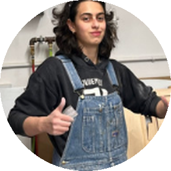

Plate I · The career map: name a job, and see which courses lead there from what you’ve already taken.
Role
UX research and design
workshop facilitator
Timeline
2024
Setting
OCAD University
Toronto
Tools
Figma, Photoshop, Canva, Claude
Overview
I spent five years at OCAD U and only figured out what I wanted to do in my final year. Classmates kept asking me which courses to take. The real problem: nothing connects courses to careers. An art degree can lead to many jobs, but students get little guidance on their options. Some find a course they want, like jewellery making, only to learn too late that they’re missing the prerequisites. I redesigned the student portal around a career map that shows which courses lead where.
The question
How does OCAD U’s portal help students make choices that connect to their career, and does it actually help?
Contents
Select a chapter to open or close it
I.Problem and Goalsp. 1−
Students pick courses by credit requirement and word of mouth, and there are only two academic advisors to ask out of 1000s of students.
Goals
01Connect every requirement to real courses, and courses to where they can lead.
02Make help available without an appointment, so advisors’ time goes to the questions that need them.
03Show the few things a student needs right now, around registration and deadlines, and nothing else.

“When I go to professors privately and ask they are very helpful but as an institution they are not.”
“OCAD doesn’t talk about the pathways or courses at all.”
“There are no slots open to have an appointment for academic advisors.”
Students I interviewed, 2024
II.Researchp. 2−
I ran a Google Forms survey and in-person interviews with OCAD U students, and read four studies of universities in Canada, the US, Italy and Australia.
Survey · 20 OCAD U students, 55% entering their final year · collected through Google Forms
40%
knew what their career path looked like
60%
didn’t know which courses related to the skills they’d need
60%
strongly disagreed that OCAD had helped them choose courses for their career
20%
disagreed
I then interviewed five other students one to one, in person, to hear how they actually choose courses and where the portal gets in the way.
What the studies found → what it meant for the design
01Canada: art graduates are the least likely to work in their field → OCAD U students need more career guidance than most.
02USA: over half of students who wanted career counselling couldn’t get it → help without an appointment.
03Australia: students use their portal “just in time”, around deadlines → dates first, nothing extra.
04Italy: students with disabilities get little career support → accessibility from the start.
III.Process and Brandingp. 3−
I mapped the portal’s information architecture and user flows, designed high-fidelity screens in Figma, and built an animated prototype. I tested it with three peers and made changes after each round.
01
Research
Survey, interviews, studies
02
Ideate
Information architecture, user flows
03
Design
Wireframes, UI, Figma
04
Prototype
Interactive prototype, animation
05
Test
Three peers, then iterate
Soft blues for calm and trust, so the content does the talking
Navy #00234d
Blue #d2e6ff
Mist #eef7ff
White #ffffff
Done #caf2cc
In progress #fff3d1
Not passed #f1c2c2
Fig. 1 · The portal’s palette. Typeface: Helvetica, never below 12 pt.
Not colour alone
Green means done, yellow means in progress and red means not passed. Each status also has an icon and a word, so it still reads for colour-blind students and in greyscale.
IV.The Screensp. 4−
Six steps, from the first thing a student sees to asking for help. Each one answers a problem from the research.
Explore careers: start from the job
Course exploration is the heart of the redesign (Plate I). A student names a career, and the map draws a path to it from courses they’ve already finished. Each course shows which requirement it fills, what else it opens up, and what you need to take first, so prerequisites never come as a late surprise.
Good evening, Etienne
Here’s what needs doing before Fall 2024 registration.
April 12, 2024Meeting with A. Moreau, academic advisor
Talked about retaking Writing Nonfiction in the fall. Writing for Business also counts for Liberal Arts C and fits better with the Communications minor.
January 30, 2024Meeting with A. Moreau, academic advisor
Etienne is interested in furniture and service design. Suggested Participatory Design Methods next year, and the Furniture Studio elective in year 4.
Space Cat can get things wrong. Check with an advisor before you register.Talk to an advisor
Advising and Space Cat
With two advisors for 1000s of students, Space Cat answers routine questions any time, links interests to courses and hands over to the career map. Every answer points back to an advisor.
Figs. 2–6 · Prototype clips: each screen shown at the same size, with the click that leads to the next step.
V.Reflectionp. 5−
Students need career guidance inside the tool they already use to register. Two advisors can’t do it alone.
OCAD U’s IT team told me the portal is locked into a four-year contract and runs on older, strict infrastructure. Even one focused change is hard to make.
So a full redesign isn’t realistic yet. I’d start with the career map alone: the biggest fix, and the strongest case for when the contract is renewed. Next, I’d work with IT on what’s possible, test with students who use Student Accessibility Services, and see if the map changes how students choose courses.